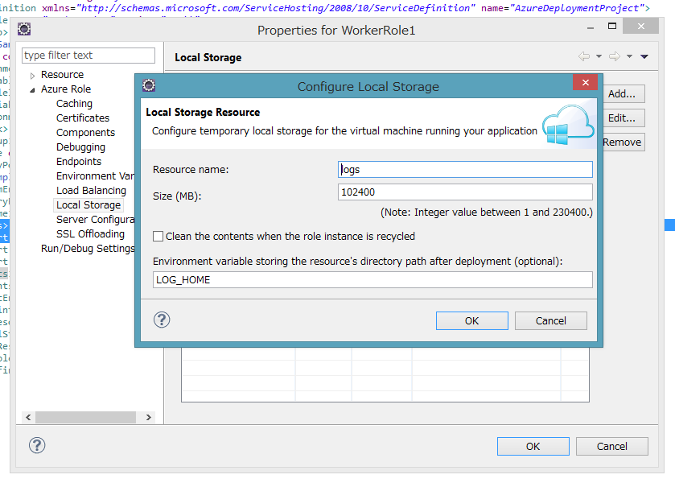

Java Cloud Service Diagnostics Plugin
Cloud Servicen には、Diagnostics の Pluginがありますが、Eclispe Azure Pluginで作成される、Azure Cloud ServiceのWorkerRoleでは、有効になっていません。ここでは、Diagnostics Plugin を使って、Java アプリケーションのLogをAzure Blobへ転送する方法を説明します。
Overview：設定方法の概要
下記の５つのステップを踏みます。
- Local Storageを定義する
- csdefでDiagnosticsをImportする
- cscfgでDiagnosticsのConnectionStringを定義する
- Diagnosticsnの設定をdiagnostics.wadcfgに記述してWorkerRoleのRootに配置
- アプリケーションのログは、「１」に出力する
1. Local Storageの定義
Eclispe Azure Pluginで、Azure ProjectのRoleのプロパティを開いて、Local Storageの設定をします。下記の画面のような設定をすると、環境変数LOG_HOMEに、Local Storage ResouceLocalStorageのフルパスが設定されます。
2. csdefのDiagnosticsをImport
下記のImport Diagnosticsと書いてある行を追加してください、Diagnostics Plugin Moduleをインポート設定です。この例をでは、remote desktop 設定もされています。
</Runtime>
<Imports>
<Import moduleName="Diagnostics"/>
<Import moduleName="RemoteAccess"/>
<Import moduleName="RemoteForwarder"/>
</Imports>
3. cscfgのDiagnosticsのConnectionStringを定義
下記のMicrosoft.WindowsAzure.Plugins.Diagnostics.ConnectionStringの行を追加して下さい。valueの部分には、logを転送する、storage accountの接続文字列を記述します。
<?xml version="1.0" encoding="utf-8" standalone="no"?>
<ServiceConfiguration xmlns="http://schemas.microsoft.com/ServiceHosting/2008/10/ServiceConfiguration" osFamily="4" osVersion="*" serviceName="AzureDeploymentProject">
<Role name="WorkerRole1">
<Instances count="1"/>
<ConfigurationSettings>
<Setting name="Microsoft.WindowsAzure.Plugins.Diagnostics.ConnectionString" value="***************"/>
<Setting name="Microsoft.WindowsAzure.Plugins.RemoteAccess.Enabled" value="true"/>
<Setting name="Microsoft.WindowsAzure.Plugins.RemoteForwarder.Enabled" value="true"/>
4. Diagnosticsnの設定をdiagnostics.wadcfgに記述してWorkerRoleのRootに配置
診断構成ファイル diagnostics.wadcfgに、 diagnostics plugin の設定を記述します。 ここでは、Local Storage Resoucelogsとして定義場所にあるファイルを定期的に転送する設定を書いています。それ以外に各種設定が記述できます、Windows Azure 診断構成ファイルの使用方法などを参考にしてください。 VSを使うと、GUIで設定することもできます。Azure 診断の構成
<?xml version="1.0" encoding="utf-8"?>
<DiagnosticMonitorConfiguration configurationChangePollInterval="PT1M" overallQuotaInMB="4096" xmlns="http://schemas.microsoft.com/ServiceHosting/2010/10/DiagnosticsConfiguration">
<DiagnosticInfrastructureLogs />
<Directories bufferQuotaInMB="1024" scheduledTransferPeriod="PT1M">
<DataSources>
<DirectoryConfiguration container="diagnostics-custom-logs" directoryQuotaInMB="128">
<LocalResource name="logs" relativePath="." />
</DirectoryConfiguration>
</DataSources>
</Directories>
<Logs />
</DiagnosticMonitorConfiguration>
診断構成ファイルは、Roleのルートディレクトリ、つまりAzure Projectのapproot ディレクトリに置きます。
└─Azure
├─.externalToolBuilders
├─.templates
│ ├─devPortal
│ ├─emulatorTools
│ └─startup
├─cert
├─deploy
└─WorkerRole1
└─approot << ** here **
└─util
5. アプリケーションのログ出力する
利用しているlogging frameworkによって変わりますが、log4jでは、Javaのsystem property に環境変数（今回は、LOG_HOME)の値をセットして、logging frameworkの設定ファイルで参照するという形を取ります。Javaのlogging apiが、site.logdir を参照するので、-Dsite.logdir="%LOG_HOME%"のようにすると、従来ファイルに出ていたものを一括して Local Storage Resouce に書き出すことができます。